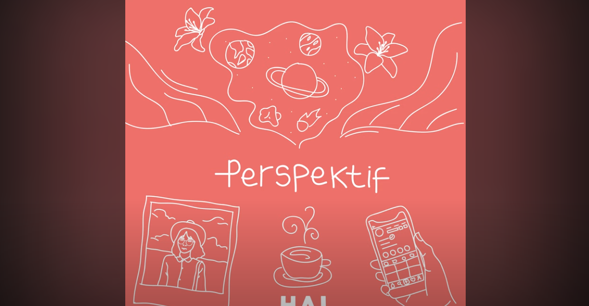

Lagu Favorit di Indonesia
Diri - Tulus
Lagu ini dibuat oleh tulus yang menceritakan kisah manusia yang sedang melakukan self-healing pada dirinya sendiri dan berusaha untuk mencintai dan memotivasi diri.
Terimakasih - HAL

Lagu ini dibuat oleh tulus yang menceritakan kisah manusia yang sedang melakukan self-healing pada dirinya sendiri dan berusaha untuk mencintai dan memotivasi diri.
Diri - Tulus
Lagu ini dibuat oleh tulus yang menceritakan kisah manusia yang sedang melakukan self-healing pada dirinya sendiri dan berusaha untuk mencintai dan memotivasi diri.